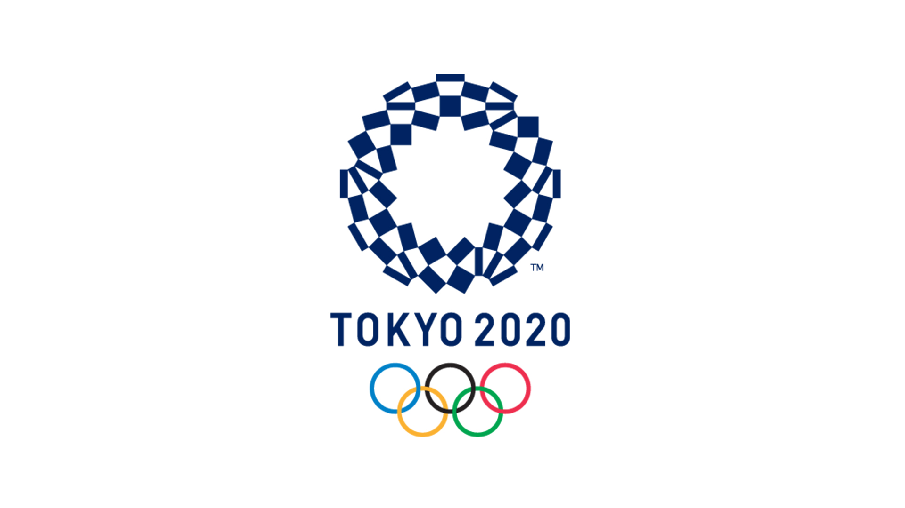
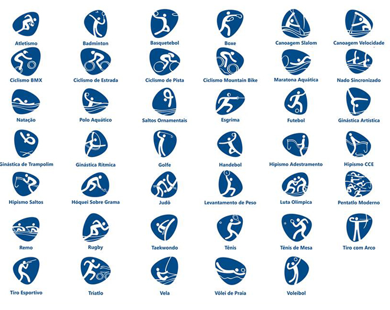
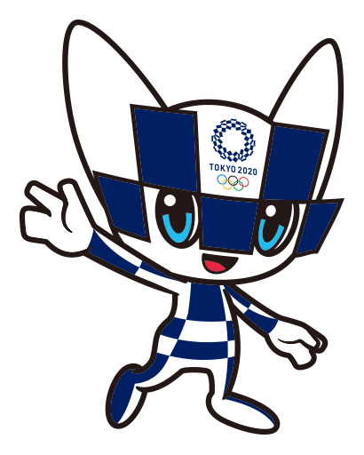

Destaques
Abe Shinzo pediu ao Comitê Olímpico Internacional para adiar os jogos que deveriam acontecer em Tóquio neste ano.
Mesmo com adiamento da Olímpiada, incertezas continuam em meio à pandemia.
Segundo uma estimativa do professor Katsuhiro Miyamoto, professor de economia da Universidade de Kansai, no Japão, a realocação dos Jogos Olímpicos custará entre U$ 5,4 bilhões e U$ 6,2 bilhões ao governo do país organizador.
Confira as Modalidades Olímpicas:

Conheça as novas modalidades das Olimpíadas que estreiam em Tóquio!
Surfe, Skate, Karatê, Escalada, Beisebol, terão a sua primeira edição olímpica.
Falta um pouco mais de um ano para as Olimpíadas de Tóquio, em 2021, e a expectativa sobre a competição está cada vez maior, principalmente com as novas modalidades que estrearão ano que vem. Com a entrada dos novos esportes, nomes conhecidos como Gabriel
Medina provavelmente disputarão a competição mais importante do mundo.
Tóquio 2020 batiza mascotes da Olimpíada: Miraitowa e Someity.

Miraitowa
Nome formado pelas palavras japonesas Mirai (futuro) e Towa (eternidade), que representa o desejo de um futuro cheio de esperança nos corações de todas as pessoas do mundo.

Someity
Criatura inspirada nas tradicionais flores de cerejeira do Japão e que tem um incrível poder mental e força física, simbolizando a superação de obstáculos dos paratletas. Seu nome é baseado na junção de Someiyoshino (espécie de flor de cerejeira) com
o termo “so might”.